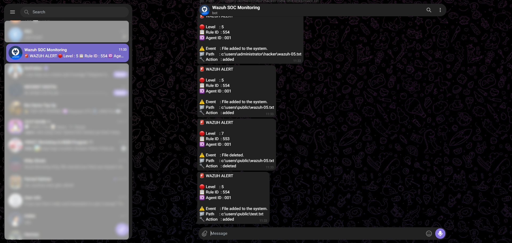

Wazuh SIEM → Telegram
Real-Time Security Alert Integration
Wazuh adalah platform SIEM open-source yang mengumpulkan dan menganalisis log dari endpoint untuk mendeteksi ancaman keamanan. Project ini menghubungkan Wazuh Manager dengan Telegram Bot API, sehingga setiap kali Wazuh mendeteksi perubahan mencurigakan pada sebuah endpoint, notifikasi terkirim langsung ke chat Telegram tanpa perlu membuka dashboard.
Masalah yang diselesaikan
Wazuh dashboard tidak selalu dipantau secara real-time. Alert kritikal bisa terlewat jika analis tidak sedang membuka console. Integrasi Telegram memindahkan notifikasi ke channel yang selalu aktif di perangkat analis.
Hasil akhir
File Integrity Monitoring (FIM) pada endpoint Windows berhasil memicu Rule ID 550, dan alert tersebut diteruskan secara otomatis ke Telegram dalam hitungan detik melalui custom integration berbasis Python.
Cakupan saat ini
Yang sudah teruji: alert FIM (perubahan file) level 5 ke atas. Deteksi lain seperti failed login, malware, dan PowerShell abuse belum diimplementasikan — lihat bagian Future Development.
Architecture
Lima komponen inti membentuk lab ini: bot Telegram sebagai penerima notifikasi, Wazuh Manager sebagai otak analisis, Wazuh Agent sebagai pengumpul data, endpoint Windows sebagai sumber event, dan Telegram sebagai output akhir.
- Token Bot
- Chat ID
- Mengirim / menerima pesan via Telegram Bot API
Bot API
- Menerima data dari agent
- Menganalisis log & event
- Rule matching
- Generate alert
Event
- Mengirim data (logs & events) ke Wazuh Manager
- FIM, malware detection, system events
- File / folder berubah (FIM)
- EICAR test (malware) — belum diuji
- System / security events
Event
- Alert dikirim real-time ke Telegram Bot (user)
Requirements
Komponen yang dibutuhkan sebelum memulai integrasi.
Environment
Peran setiap komponen dalam environment pengujian.
| Component | Role |
|---|---|
| Kali Linux | Wazuh Manager |
| Windows | Wazuh Agent / Endpoint |
| Telegram | Alert Notification |
| Python | Custom Integration |
| Telegram Bot API | Message Delivery |
Telegram Bot Setup
Langkah membuat bot dan mendapatkan token serta chat ID yang dibutuhkan integrasi.
- Buka BotFather di Telegram dan mulai percakapan.
- Kirim perintah
/newbotuntuk membuat bot baru, lalu tentukan nama dan username bot. - BotFather akan memberikan bot token — simpan sebagai
TOKEN_BOT_KAMU, jangan pernah membagikannya. - Buka bot yang baru dibuat dari hasil pencarian Telegram.
- Tekan tombol Start agar bot bisa mengirim pesan ke chat kamu.
- Dapatkan
CHAT_ID_KAMUdengan memanggil endpointgetUpdates(lihat bagian Telegram API Testing).
TOKEN_BOT_KAMU dan CHAT_ID_KAMU.
Telegram API Testing
Dua endpoint utama digunakan untuk memvalidasi bot sebelum dihubungkan ke Wazuh.
curl -s "https://api.telegram.org/botTOKEN_BOT_KAMU/getUpdates"Command ini mengembalikan JSON berisi riwayat pesan ke bot, termasuk chat.id
pengirim — inilah nilai yang dipakai sebagai CHAT_ID_KAMU.
{"ok":true,"result":[{"update_id":XXXXXXXXX,
"message":{"message_id":1,"from":{"id":CHAT_ID_KAMU,"is_bot":false,
"first_name":"...","username":"...","language_code":"id"},
"chat":{"id":CHAT_ID_KAMU,"type":"private"},
"date":XXXXXXXXXX,"text":"/start",
"entities":[{"offset":0,"length":6,"type":"bot_command"}]}}]}Field chat.id pada response inilah yang diambil sebagai CHAT_ID_KAMU.
Nilai token dan chat ID pada dokumentasi ini sengaja diganti placeholder — jangan pernah mem-publish token/chat ID asli.
curl -s -X POST "https://api.telegram.org/botTOKEN_BOT_KAMU/sendMessage" \
-d chat_id="CHAT_ID_KAMU" \
-d text="Test alert dari Wazuh Integration"Digunakan untuk memastikan token dan chat ID valid sebelum diintegrasikan ke script Python.
{"ok":true,"result":{"message_id":2,
"from":{"id":BOT_ID_KAMU,"is_bot":true,"first_name":"nama_bot_kamu"},
"chat":{"id":CHAT_ID_KAMU,"type":"private"},
"date":XXXXXXXXXX,"text":"TEST WAZUH TELEGRAM"}}"ok":true menandakan pesan berhasil terkirim — token bot dan chat ID sudah valid
dan siap dipakai di script integrasi.
Wazuh Custom Integration
File integrasi berada di /var/ossec/integrations/custom-telegram dan berjalan sebagai
script Python yang dipanggil otomatis oleh Wazuh Manager setiap kali ada alert yang cocok dengan
konfigurasi.
Membuat file integrasi
sudo nano /var/ossec/integrations/custom-telegramIsi script custom-telegram
#!/usr/bin/env python3
import sys
import json
import requests
TOKEN = "TOKEN_BOT_KAMU"
CHAT_ID = "CHAT_ID_KAMU"
alert_file = sys.argv[1]
with open(alert_file, "r") as f:
alert = json.load(f)
rule = alert.get("rule", {})
agent = alert.get("agent", {})
syscheck = alert.get("syscheck", {})
message = f"""🚨 WAZUH ALERT
🔴 Level : {rule.get("level", "-")}
📋 Rule ID : {rule.get("id", "-")}
💻 Agent : {agent.get("name", "-")}
🆔 Agent ID : {agent.get("id", "-")}
⚠️ Event : {rule.get("description", "-")}
📁 Path : {syscheck.get("path", "-")}
🔧 Action : {syscheck.get("event", "-")}
"""
url = f"https://api.telegram.org/bot{TOKEN}/sendMessage"
requests.post(
url,
data={
"chat_id": CHAT_ID,
"text": message
},
timeout=10
)Wazuh Manager memanggil script ini dengan path file alert JSON sebagai argumen
(sys.argv[1]) setiap kali sebuah alert cocok dengan konfigurasi <integration>
di ossec.conf.
Fungsi script
- Membaca alert dalam format JSON yang dikirim Wazuh melalui argumen script
- Mengambil data
rule(id, level, description) - Mengambil data
agent(name, id) - Mengambil data
syscheck(path file, jenis perubahan) - Membentuk pesan terformat dari data-data tersebut
- Mengirim pesan ke Telegram melalui endpoint
sendMessage
Permission & ownership
sudo chmod 750 /var/ossec/integrations/custom-telegramsudo chown root:wazuh /var/ossec/integrations/custom-telegramDependency
sudo apt install python3-requests -yWazuh Configuration
Integrasi didaftarkan pada /var/ossec/etc/ossec.conf agar Wazuh Manager
memanggil script custom-telegram setiap kali alert baru terbentuk.
sudo nano /var/ossec/etc/ossec.confTambahkan blok <integration> berikut tepat sebelum tag penutup
</ossec_config>.
<integration>
<name>custom-telegram</name>
<level>5</level>
<group>syscheck</group>
<alert_format>json</alert_format>
</integration>| Parameter | Keterangan |
|---|---|
level 5 | Integrasi hanya dipicu untuk alert dengan level 5 ke atas, menyaring event minor agar tidak membanjiri Telegram. |
group syscheck | Membatasi integrasi pada alert dari grup syscheck, yaitu modul File Integrity Monitoring. |
alert_format json | Alert dikirim ke script dalam format JSON agar mudah di-parse oleh Python. |
sudo systemctl restart wazuh-managerFIM Testing
Skenario pengujian yang digunakan untuk memvalidasi seluruh pipeline, dari perubahan file di endpoint hingga notifikasi diterima di Telegram.
- Windows membuat file uji di
C:\Users\Public\wazuh-test.txt - Wazuh Agent memonitor lokasi file tersebut melalui modul syscheck
- File dimodifikasi (isi file diubah)
- Agent mengirim event perubahan ke Wazuh Manager
- Wazuh Manager menganalisis event terhadap rule yang tersedia
- Rule ID 550 (integrity checksum changed) terpicu pada level 7
- Custom integration mengambil alert JSON dan membentuk pesan
- Telegram menerima notifikasi alert secara real-time
Alert Flow
Detail tujuh langkah dari satu kejadian di endpoint Windows hingga alert diterima di Telegram — ini adalah alur yang sudah diuji menggunakan skenario FIM.
Terjadi perubahan file / folder atau EICAR test dijalankan di Windows.
Contoh: C:\Data\test.txt diubah.
Wazuh Agent mendeteksi perubahan / event dan mengirimkannya ke Wazuh Manager.
Wazuh Manager menerima data, menganalisis log & event, mencocokkan dengan rule (misal: Rule ID 550).
Rule cocok → alert dibuat dengan level (misal ≥ 5), format JSON.
Script Python membaca alert JSON dan mengirimkannya ke Telegram Bot API.
Telegram Bot API menerima request dari script dan mengirim pesan ke chat ID tujuan.
User menerima alert secara real-time di Telegram.
Rule ID : 550
Agent : LAPTOP-AQJ28AHJ
Path : c:\data\test.txt
Action : modified
Ringkasan
Inti dari lab ini dalam lima poin. Item bertanda konsep menggambarkan kemampuan yang sudah didesain dalam topologi tetapi belum sepenuhnya diuji — lihat Future Development.
FIM memantau integritas file & direktori penting secara real-time.
Malware dapat dideteksi menggunakan EICAR test file — belum diuji pada lab ini.
Alert dikirim otomatis ke Telegram tanpa delay yang berarti.
Semua event dan alert dapat dipantau langsung di Wazuh Dashboard.
Meningkatkan visibilitas, deteksi, dan respons terhadap ancaman pada endpoint.
syscheck untuk FIM).
Example Alert
Contoh notifikasi asli yang diterima di Telegram setelah pengujian FIM pada
wazuh-test.txt.

Screenshot asli chat Telegram — beberapa alert FIM (file added / deleted) berhasil diterima secara real-time dari bot Wazuh SOC Monitoring selama pengujian.